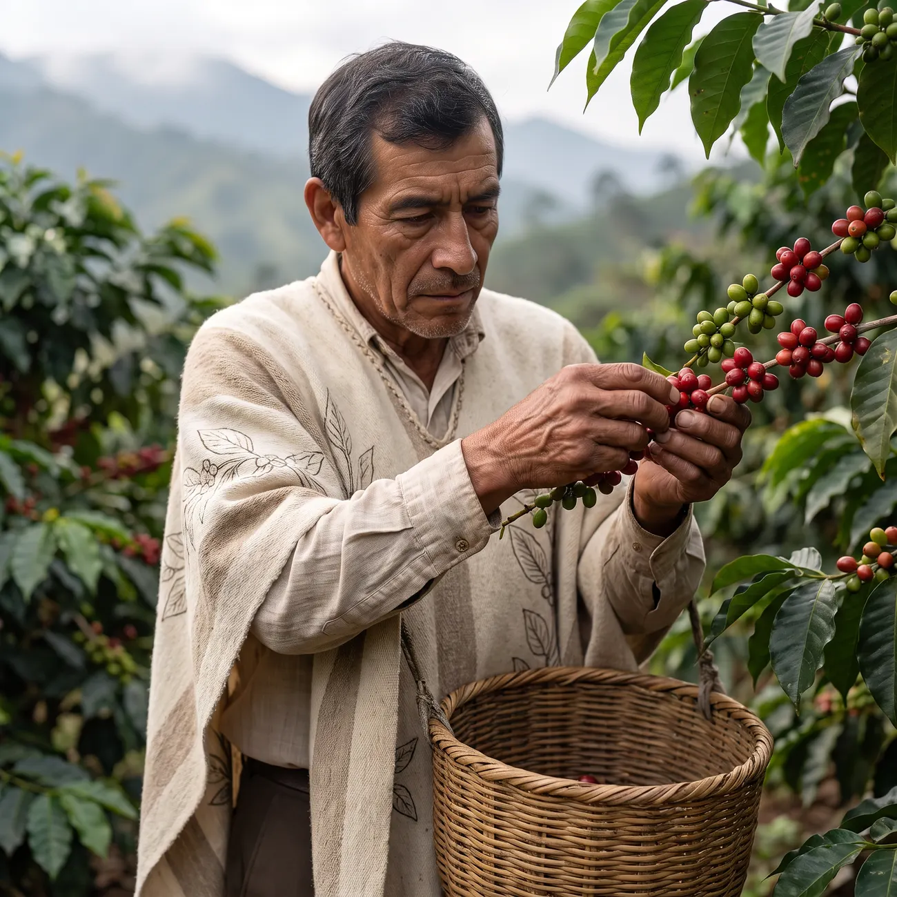
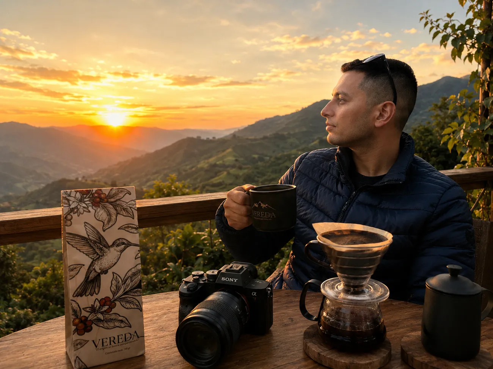

Del legado de don José, que en 1998 vendió su Jeep Willys y sembró café cerca de Sevilla, Valle del Cauca. En taza: chocolate profundo, frutos secos y un dulzor de panela, con un final que acompaña la conversación.
Variedad Castillo
1.750 msnm
Suave lavado
Tostión media
$55.000 COP · 340 g
Molienda
1
El ritual
La pausa bien servida.
Tres pasos, sin ciencia ni afán. El café se disfruta, no se rinde examen.
i
Muele fresco
Molido medio para greca o prensa. Pídelo ya molido si prefieres.
ii
Agua a punto
Casi hirviendo, no hervida. Deja que repose un momento.
iii
Siéntate
Sirve, respira y conversa. Ese es el punto de todo esto.
El origen y el legado
La historia que sostiene la taza.

Don José
En 1998, don José era conductor de un Jeep Willys. Un día eligió dejar de andar caminos para sembrarlos: vendió el Willys y compró una finca cerca de Sevilla, Valle del Cauca.
Hoy la finca es un legado vivo. Sus hijas y su familia sostienen la siembra y la cosecha con la constancia y el detalle que él enseñó.

La visión de Bayron
Bayron Londoño nació en Nariño, Antioquia, y aprendió a amar la montaña recorriéndola. VEREDA nace de su propósito: dar a conocer la Colombia buena por medio del café.
No desde el marketing, sino desde la experiencia real: el café como punto de encuentro donde nacen relaciones, alianzas y proyectos.
Este café tiene familia, tiene territorio, tiene disciplina y una historia que se sostiene con manos reales.
Cada bolsa, una pieza de colección
Formas de conocer Colombia.
Disponible
VEREDA · Origen
El lote actual de la finca: galardonado con el tercer puesto entre los mejores cafés de Colombia. Un origen que se descubre.